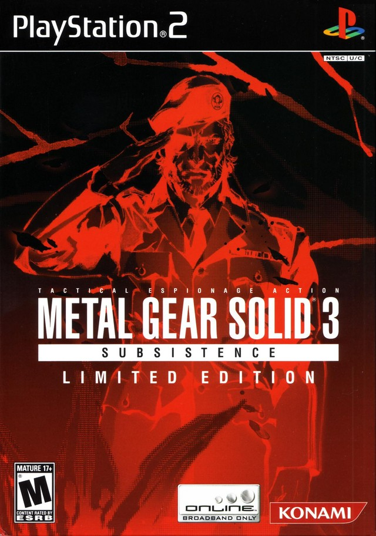
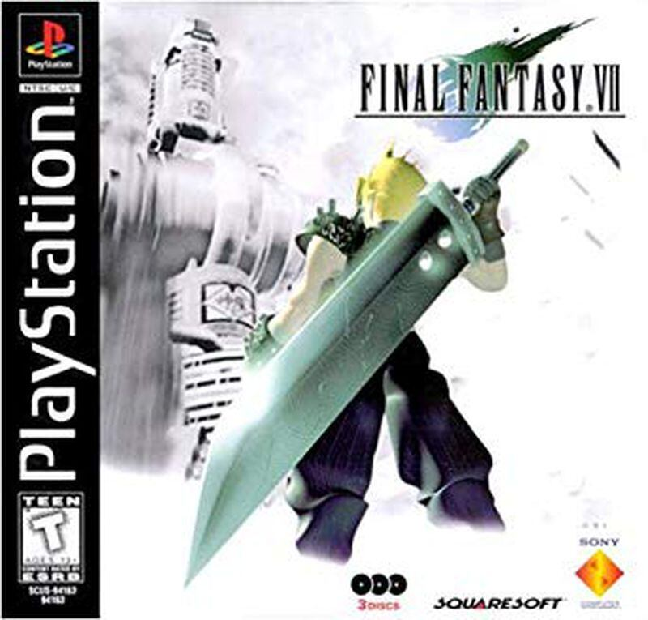
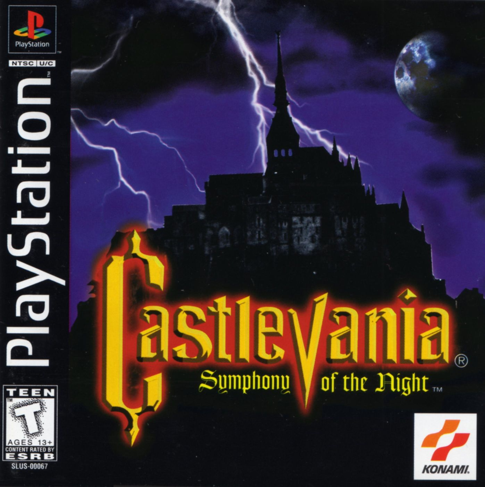

| VIDEOJUEGO | DESCRIPCIÓN |
| Metal Gear Solid | Metal Gear Solid ofreció una combinación singularmente única de gameplay sigiloso/acción, y la combinó con un elenco de personajes completamente extraño pero absolutamente encantador y una historia que desafió nuestras ideas de "héroes" de los videojuegos tradicionales y empujó los límites de la narración cinematográfica en los videojuegos en ese momento. Todos estos elementos excepcionales, más algunas rupturas verdaderamente inolvidables en la cuarta pared, se combinaron para crear una experiencia de juego que aún se mantiene como una de las mejores hasta el día de hoy. |
| Final Fantasy VII | Final Fantasy VII es (casi) el único responsable de poner los JRPG en el mapa. Nadie había visto nada parecido cuando se lanzó en la PlayStation original en 1997. Es el segundo después de Gran Turismo en unidades vendidas, y por una buena razón. La historia oscura de ciencia ficción y el diseño de personajes increíblemente actual tomaron una franquicia de fantasía caprichosa y la llevaron a una audiencia internacional de una manera que ni Sony ni Square podrían haber predicho. Es un clásico atemporal que generó todo un universo de spin-offs (y un remake estelar) que merece absolutamente todos sus elogios, a pesar de algunas de sus deficiencias más evidentes. |
| Castlevania: Symphony of the Night | Lanzar un Castlevania 2D "de aspecto antiguo" en PlayStation parecía un movimiento extraño para algunos en 1997 - incluso la reseña original de IGN dice: "Parece la misma acción de plataforma 2D de antes". Otras franquicias clásicas ya habían dado el salto a la tercera dimensión, y nuevos juegos como Tomb Raider mostraban lo que la PS1 podía hacer que las consolas anteriores no podían, pero mantener Symphony of the Night en 2D permitió a Konami refinar el gameplay de Castlevania a la perfección absoluta, y su hermoso pixel art ha envejecido mucho mejor que la mayoría de sus contemporáneos 3D.Luego está la increíble banda sonora, que los fans siguen tarareando hasta el día de hoy. Castlevania: Symphony of the Night es lo más parecido a un videojuego perfecto que puedes conseguir, uno que todavía está siendo copiado e iterado por los desarrolladores modernos. |